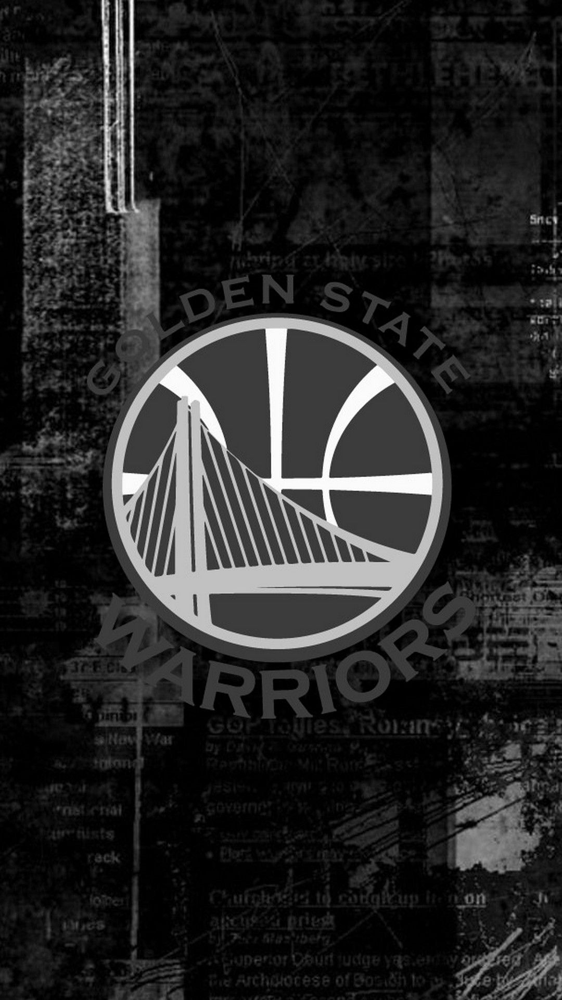
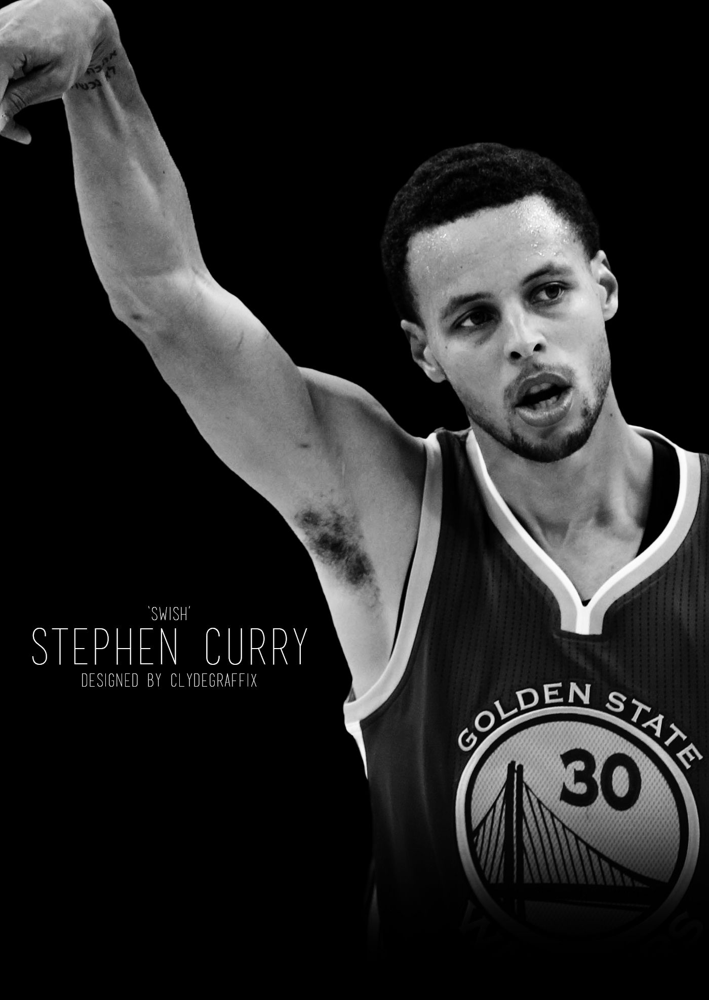

What is my Favorite Sports?
Basketball
Basketball is one of the biggest thing in my life that is so relevant even though I am not a professional basketball player or a varsity player in my school, but my love for this game is like on another level. This is one of the biggest thing that I look upto, I am a very big fan of the game especially the NBA, Started when I am at the very young age I already knew and watch basketball and becomes addicted to it so when I am old enough to play I always take the opportunity to play hard and mimic all the moves that my Idol or my Icon is doing. Even untill now I still play basketball casually due to my busy and hectic schedule and Basketball also becomes a bridge for me to become friends to many people that is a big fan of the game too.

My Favorite Team?
Golden State Warriors
The Historic run, the championships, the Against all odds attitude. Golden State Warriors considered the best team in the decade are one of the reason I became inlove in that game with the way how they play the ball and their beautiful ball movement with how they won against A well known and strong team and won championships despite of all the hate and criticism they faced is what the true Warrior should be.
My Favorite Player?
Stephen Curry
It is way back 2014 when Stephen Curry makes it rain in the Madison Square Garden playing against the Newyork Knicks Anthony led team. I appreciate the greatness that he had shown in the game despite of being not to talled and being skinny guy on the court but showin a lot of heart and hardwork and making his abilities cover up all his disabilities is what makes him a very special player for me.
